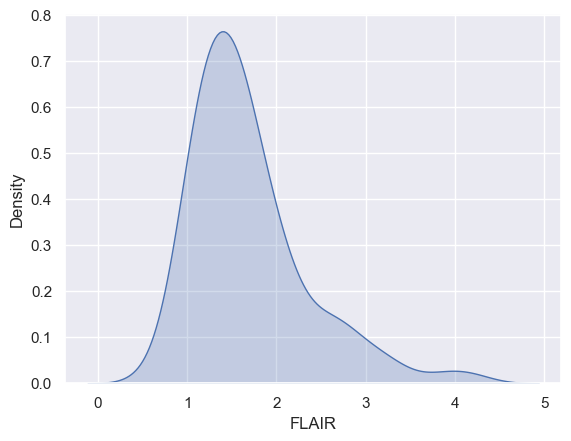

tensorflow#
true
fake
diff
cp python.ipynb ../3.dna.origins/training/chapter7.ipynb
nano ../3.dna.origins/training/_toc.yml
ls -l ../3.dna.origins/training/
mv ../3.dna.origins/training/python.ipynb ../3.dna.origins/training/chapter6.ipynb
cp ../3.dna.origins/training/chapter6.ipynb ../3.dna.origins/training/chapter9.ipynb
One notable difference between Jupyter Lab and VS Code when working with .ipynb files is that Jupyter Lab has built-in support for kernel management, which allows you to switch between different Python kernels or other programming languages within the same notebook. This functionality is not available in VS Code by default, but it can be added through third-party extensions. ChatGPT May 12 Version
import numpy as np
import pandas as pd
import seaborn as sns
import matplotlib.pyplot as plt
import requests
import io
import warnings
## this sets some style parameters
sns.set()
from sklearn.metrics import accuracy_score, roc_curve, auc
warnings.filterwarnings('ignore')
url = "https://raw.githubusercontent.com/bcaffo/ds4bme_intro/master/data/oasis.csv"
content = requests.get(url).content.decode('utf-8')
dat = pd.read_csv(io.StringIO(content))
dat.head(4)
dat.shape
(100, 13)
dat.groupby('GOLD_Lesions').FLAIR.hist(alpha= .5)
GOLD_Lesions
0 Axes(0.125,0.11;0.775x0.77)
1 Axes(0.125,0.11;0.775x0.77)
Name: FLAIR, dtype: object

x0 = dat.FLAIR[dat.GOLD_Lesions == 0]
x1 = dat.FLAIR[dat.GOLD_Lesions == 1]
x2 = dat.FLAIR
sns.kdeplot(x2, shade = True, label = 'Marginal')
plt.show()
sns.kdeplot(x0, shade = True, label = 'Gold Std = 0')
sns.kdeplot(x1, shade = True, label = 'Gold Std = 1')
plt.show()


x = dat.FLAIR
y = dat.GOLD_Lesions
n = len(x)
trainFraction = .75
## Build a training and testing set
## Prob of being in the train set is trainFraction
sample = np.random.uniform(size = n) < trainFraction
## Get the training and testing sets
xtrain = x[ sample]
ytrain = y[ sample]
xtest = x[~sample]
ytest = y[~sample]
## Starting values, just set it to
## 0 so that it improves on the first
## try
bestAccuracySoFar = 0
for t in np.sort(xtrain):
## Strictly greater than the threshold is
## our algorithm
predictions = (xtrain > t)
accuracy = np.mean(ytrain == predictions)
if (accuracy > bestAccuracySoFar):
bestThresholdSoFar = t
bestAccuracySoFar = accuracy
threshold = bestThresholdSoFar
## Let's test it out on the test set
testPredictions = (xtest > threshold)
## The test set accuracy
testAccuracy = np.mean(testPredictions == ytest)
## Let's see how it specifically does on the
## set of instances where ytest == 0 and ytest == 1
## The % it gets correct on ytest == 0 is called
## the specificity and the percent correct when
## ytest == 1 is called the sensitivity.
sub0 = ytest == 0
sub1 = ytest == 1
testSpec = np.mean(ytest[sub0] == testPredictions[sub0])
testSens = np.mean(ytest[sub1] == testPredictions[sub1])
pd.DataFrame({
'Threshold': threshold,
'Accuracy': testAccuracy,
'Specificity': testSpec,
'Sensitivity': testSens}, index = [0])
| Threshold | Accuracy | Specificity | Sensitivity | |
|---|---|---|---|---|
| 0 | 2.09005 | 0.407407 | 0.888889 | 0.166667 |
sns.kdeplot(x0, shade = True, label = 'Gold Std = 0')
sns.kdeplot(x1, shade = True, label = 'Gold Std = 1')
plt.axvline(x=threshold)
plt.show()
fpr, tpr, thresholds = roc_curve(ytest, xtest)
roc_auc = auc(fpr, tpr)
plt.figure()
lw = 2
plt.plot(fpr, tpr, color='darkorange',
lw=lw, label='ROC curve (area = %0.2f)' % roc_auc)
plt.plot([0, 1], [0, 1], color='navy', lw=lw, linestyle='--')
plt.xlim([-0.05, 1.05])
plt.ylim([-0.05, 1.05])
plt.xlabel('False Positive Rate')
plt.ylabel('True Positive Rate')
plt.title('Receiver operating characteristic example')
plt.legend(loc="lower right")
plt.show()
import pandas as pd
import numpy as np
import matplotlib.pyplot as plt
import requests
import io
url = "https://raw.githubusercontent.com/bcaffo/ds4bme_intro/master/data/oasis.csv"
content = requests.get(url).content.decode("utf-8")
dat = pd.read_csv(io.StringIO(content))
dat.head()
| FLAIR | PD | T1 | T2 | FLAIR_10 | PD_10 | T1_10 | T2_10 | FLAIR_20 | PD_20 | T1_20 | T2_20 | GOLD_Lesions | |
|---|---|---|---|---|---|---|---|---|---|---|---|---|---|
| 0 | 1.143692 | 1.586219 | -0.799859 | 1.634467 | 0.437568 | 0.823800 | -0.002059 | 0.573663 | 0.279832 | 0.548341 | 0.219136 | 0.298662 | 0 |
| 1 | 1.652552 | 1.766672 | -1.250992 | 0.921230 | 0.663037 | 0.880250 | -0.422060 | 0.542597 | 0.422182 | 0.549711 | 0.061573 | 0.280972 | 0 |
| 2 | 1.036099 | 0.262042 | -0.858565 | -0.058211 | -0.044280 | -0.308569 | 0.014766 | -0.256075 | -0.136532 | -0.350905 | 0.020673 | -0.259914 | 0 |
| 3 | 1.037692 | 0.011104 | -1.228796 | -0.470222 | -0.013971 | -0.000498 | -0.395575 | -0.221900 | 0.000807 | -0.003085 | -0.193249 | -0.139284 | 0 |
| 4 | 1.580589 | 1.730152 | -0.860949 | 1.245609 | 0.617957 | 0.866352 | -0.099919 | 0.384261 | 0.391133 | 0.608826 | 0.071648 | 0.340601 | 0 |
x = dat.T2
y = dat.PD
plt.plot(x, y, 'o')
[<matplotlib.lines.Line2D at 0x158ab2390>]
x = dat.T2
y = dat.PD
plt.plot(x, y, 'o')
[<matplotlib.lines.Line2D at 0x158aec310>]
b = sum(y * x) / sum(x ** 2 )
b
0.9727869856707375
plt.plot(x, y, 'o')
t = np.array([-1.5, 2.5])
plt.plot(t, t * b)
[<matplotlib.lines.Line2D at 0x158b92850>]
sns.pairplot(dat, vars = ['FLAIR', 'PD', 'T1', 'T2'], hue = 'GOLD_Lesions');
from scipy import stats as st
x = dat['T2']
y = dat['PD']
trainFraction = 0.75
## Hold out data
sample = np.random.uniform(size = 100) < trainFraction
xtrain = x[ sample]
ytrain = y[ sample]
xtest = x[~sample]
ytest = y[~sample]
## get the slope on the training data
beta1 = st.pearsonr(xtrain, ytrain)[0] * np.std(ytrain) / np.std(xtrain)
beta0 = np.mean(ytrain) - np.mean(xtrain) * beta1
print([beta0, beta1])
#sns.scatterplot(xtrain, ytrain)
sns.scatterplot(x=xtrain, y=ytrain) #spot-on, chatGPT!
## add a line
sns.lineplot(x=xtrain, y=beta0 + beta1 * xtrain) #ditto
[0.33058183868993757, 0.743019097896437]
<Axes: xlabel='T2', ylabel='PD'>
print(st.linregress(x = xtrain, y = ytrain))
sns.regplot(x=xtrain, y=ytrain)
LinregressResult(slope=0.7430190978964372, intercept=0.3305818386899375, rvalue=0.7933644963011703, pvalue=1.2924115342555436e-17, stderr=0.06627475190317844, intercept_stderr=0.05823002660181495)
<Axes: xlabel='T2', ylabel='PD'>
yhat_test = beta0 + beta1 * xtest
yhat_train = beta0 + beta1 * xtrain
## claculate the MSE in the training and test sets
print([ np.mean( (ytrain - yhat_train) ** 2),
np.mean( (ytest - yhat_test) ** 2 ) ])
sns.scatterplot(y=yhat_test, x=ytest)
plt.xlabel('Predicted value from xtest T2 values')
plt.ylabel('Actual PD value from ytest')
[0.16713830877195343, 0.24282118162879465]
Text(0, 0.5, 'Actual PD value from ytest')
import pandas as pd
import numpy as np
import matplotlib.pyplot as plt
import requests
import io
url1 = "https://raw.githubusercontent.com/CSSEGISandData/COVID-19/master/"
url2 = "csse_covid_19_data/csse_covid_19_time_series/"
url3 = "time_series_covid19_confirmed_global.csv"
url4 = url1 + url2 + url3
content = requests.get(url4).content.decode("utf-8")
dat = pd.read_csv(io.StringIO(content))
## Get Italy, drop everyrthing except dates, convert to long (unstack converts to tuple)
Italy = dat[dat['Country/Region'] == 'Italy'].drop(["Province/State", "Country/Region", "Lat", "Long"], axis=1).unstack()
Italy
1/22/20 154 0
1/23/20 154 0
1/24/20 154 0
1/25/20 154 0
1/26/20 154 0
...
3/5/23 154 25603510
3/6/23 154 25603510
3/7/23 154 25603510
3/8/23 154 25603510
3/9/23 154 25603510
Length: 1143, dtype: int64
## convert from tuple to array
X = np.asarray(Italy)
## get case counts instead of cumulative counts
X = X[1 : X.size] - X[0 : (X.size - 1)]
print("Mean : " + str(np.round(X.mean(), 2)))
print("Std (biased) : " + str(np.round(X.std() , 2)))
Mean : 22419.89
Std (biased) : 36890.56
## Create a matrix of three lagged versions
X = np.array([ Italy.shift(1), Italy.shift(2), Italy.shift(3)]).transpose()
## Add a vector of ones
itc = np.ones( (X.shape[0], 1) )
X = np.concatenate( (itc, X), axis = 1)
## Visualize the results
X[0 : 10,:]
array([[ 1., nan, nan, nan],
[ 1., 0., nan, nan],
[ 1., 0., 0., nan],
[ 1., 0., 0., 0.],
[ 1., 0., 0., 0.],
[ 1., 0., 0., 0.],
[ 1., 0., 0., 0.],
[ 1., 0., 0., 0.],
[ 1., 0., 0., 0.],
[ 1., 0., 0., 0.]])
X = X[ 3 : X.shape[0], :]
np.any(np.isnan(X))
False
## Create the Y vector
Y = np.array(Italy[ 3 : Italy.shape[0]])
[Y.shape, X.shape]
[(1140,), (1140, 4)]
np.matmul(np.matmul(np.linalg.inv(np.matmul(X.T, X)), X.T), Y)
array([ 2.83671847e+03, 1.43359771e+00, -6.92820219e-02, -3.64121781e-01])
np.linalg.lstsq(X, Y, rcond = None)[0]
array([ 2.83671680e+03, 1.43359771e+00, -6.92820217e-02, -3.64121781e-01])
from sklearn import linear_model
model = linear_model.LinearRegression(fit_intercept = False)
fit = model.fit(X, Y)
fit.coef_
array([ 2.83671680e+03, 1.43359771e+00, -6.92820217e-02, -3.64121781e-01])